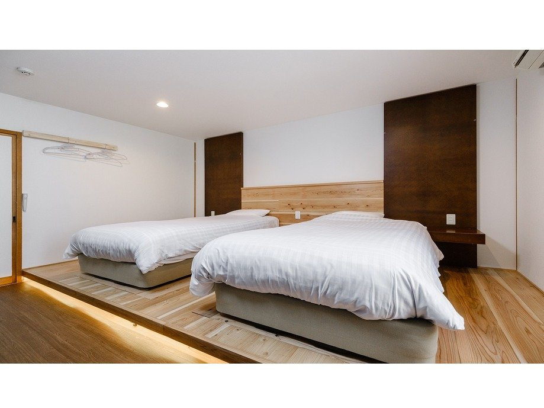

旭川に来たなら、チェックアウトの前に一度だけ早朝の常盤公園を歩いてほしい。シン トキワを出て徒歩5分。北海道の朝の空気はそれだけで十分な旅の記憶になる。

常盤公園の白鳥の池。早朝は人も少なく、静かな時間が流れる。
シン トキワから常盤公園へのルート
常盤通を西方向に5分ほど歩くと、公園の入口が見えてくる。信号1つ分の距離感で、旅行の重い荷物を部屋に置いたまま気軽に出かけられる。スニーカーで十分。
- シン トキワ出発 → 常盤通を西へ直進
- 徒歩約5分 → 常盤公園南入口
- 池沿いに一周 → 約20〜30分
- 北側出口から帰路 → 合計45分の朝さんぽ完成
池を一周する「白鳥コース」
公園の中心にある白鳥の池を反時計回りに歩くのがおすすめ。春から秋にかけては白鳥やカモが遊ぶ姿が見られる。池の対岸には北海道立旭川美術館の外壁が映り込み、思わず写真を撮りたくなる構図が随所にある。
ボートは観光シーズン中に貸し出しがあるが、朝の時間帯はまだ静か。池の水面と木立を独り占めできる贅沢な時間だ。

公園周辺の歩道。朝7時台はジョギングをする地元の方が多い。
文化施設も徒歩圏内
常盤公園の北側には北海道立旭川美術館が徒歩約8分のところにある。開館は10時からなので、チェックアウト後に立ち寄るのがちょうどいい。旭川市立中央図書館や公会堂も公園の敷地内にあり、イベントが重なる時期は地元の方々で賑わう。
朝さんぽ後はカフェでひと息
ホテルに戻ったら、1階のカフェ「トリとたまごのカフェ ココケッコウ」のオープン(11:30)を待つか、近隣のコンビニで北海道牛乳を買って部屋でのんびりするのもいい。チェックアウトは10時なので、8時頃に出発して9時半に戻るスケジュールがちょうどいい。
常盤公園 基本情報
- 場所
- 北海道旭川市常盤通
- 入場
- 無料・24時間開放
- 徒歩
- シン トキワより約5分
- ボート
- 観光シーズンのみ(有料)
- 隣接施設
- 北海道立旭川美術館・旭川市立中央図書館